AI 每日新聞彙整
全部主題
其他
2 家媒體報導huangjensenbad
Jensen Huang might be plotting a return and more of the latest Nvidia drama
The drama around Nvidia co-founder and former CEO Jensen Huang is evolving quickly. The latest edition of our Stepback newsletter should get you up to speed, but there have already been a number of new developments since this morning. That includes rumors that Jensen Huang might
- TechCrunch AI Is bad news for Jensen Huang also bad news for the AI industry?
- The Verge AI Jensen Huang might be plotting a return and more of the latest Nvidia drama
- The Verge AI Congress wants to tighten export rules on AI chips after Nvidia spy scandal
- The Verge AI An overview of Jensen Huang’s messy days
regulation
外資點出輝達股價復甦關鍵點，接班人、財報、以及美國後續監管力道
半導體大廠輝達（Nvidia）近期遭遇劇烈市場震盪，在創辦人兼執行長黃仁勳（Jensen Huang）因個人關 […]
- 科技新報 TechNews 外資點出輝達股價復甦關鍵點，接班人、財報、以及美國後續監管力道
koreadayseoul
AI Day Seoul Brings Together Korea’s Industry Leaders, Startups and Developer Communities
Over two days at COEX, more than 2,000 attendees converged for AI Day Seoul, bringing together Korea’s industry leaders, startups and developer communities advancing physical AI and AI agents. At the plenary sessions, Deepu Talla, vice president of robotics and edge AI at NVIDIA,
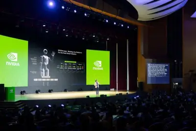
英國建立主權AI無法單打獨鬥 需台灣晶片製造、封測夥伴互補
雖然英國擁有世界領先的晶片設計、智慧財產權（IP）和研發實力，面對AI浪潮發展快速，將創新成果轉化為本土商業規模，成為產業推進的重要一步。
- DIGITIMES 英國建立主權AI無法單打獨鬥 需台灣晶片製造、封測夥伴互補
2035
從產業定義者到產業參與者 後黃仁勳時代的NVIDIA 2035展望
黃仁勳在2026年11月12日辭職生效後，市場多聚焦在下位執行長是誰。但要判斷NVIDIA十年後的樣貌，更好的起點是反過來問：如果黃仁勳還在任，NVIDIA到2035年原本會...
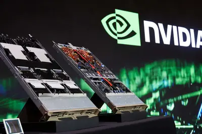
- DIGITIMES 從產業定義者到產業參與者 後黃仁勳時代的NVIDIA 2035展望
2027
黃仁勳辭職引NVIDIA訂單生變？ 台系零組件廠緊盯「2027年中」關鍵時刻
已請辭的NVIDIA前任執行長黃仁勳近期風波不斷，疑似涉及透過第三地轉運AI晶片至中國，目前也正進入調查階段，讓美方後續是否升級AI晶片出口管制，成為各界關注焦點。
- DIGITIMES 黃仁勳辭職引NVIDIA訂單生變？ 台系零組件廠緊盯「2027年中」關鍵時刻
黃仁勳風波難撼AI長線？ 歐洲數位主權和供應鏈自主方向不變
黃仁勳辭去NVIDIA執行長一職，外界高度關注是否影響NVIDIA公司發展，以及供應鏈夥伴合作關係。歐洲業界表示，單一事件短期可能帶來波動，但不至於影響AI長期發展和...
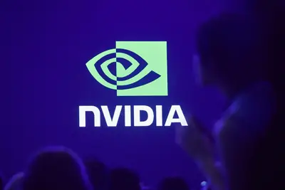
- DIGITIMES 黃仁勳風波難撼AI長線？ 歐洲數位主權和供應鏈自主方向不變
datacentercomputeaidc
AI巨頭減碳壓力轉向上游 台灣半導體、電子六哥迎低碳考驗
隨著AI資料中心（AIDC）如野火般擴張，晶片與電力需求直線飆升，主導算力需求的大型雲端服務供應商（CSP）與NVIDIA，也成為AI碳排與減排壓力的焦點。隨著減碳壓力...
- DIGITIMES AI巨頭減碳壓力轉向上游 台灣半導體、電子六哥迎低碳考驗
safetyagent
AI打破跨境網攻壁壘 日本企業資安防線為何頻頻失守？
生成式AI、AI代理（AI Agent）快速發展，除帶給企業更大的商業轉型、營運效能提升與優化空間外，駭客借重AI發動的資安攻擊也有所增加且更難防禦。以日本為例，近期包...
- DIGITIMES AI打破跨境網攻壁壘 日本企業資安防線為何頻頻失守？
matrixh...
深度：New Matrix還有幕後藏鏡人？ 新紫光掌門人李濱意外被提及檯面
一棟空置的灰色建築，沒有明顯公司招牌，也看不到營運跡象，卻是中國AI伺服器業者New Matrix登記營運的北京地址。這家成立時間不長的企業，因美國批准其處理NVIDIA H...
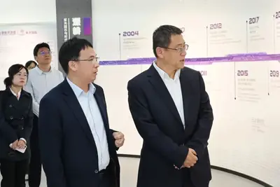
- DIGITIMES 深度：New Matrix還有幕後藏鏡人？ 新紫光掌門人李濱意外被提及檯面
megaspeed
Megaspeed案牽動星馬 配合美國管制也顧及中國
NVIDIA晶片走私風波牽扯出中國間諜疑雲，更再次讓新加坡與馬來西亞成為關注焦點。

- DIGITIMES Megaspeed案牽動星馬 配合美國管制也顧及中國
datacentersemiconeuropa
北美資料中心電力缺口近1倍 微電網激起功率晶片機會之窗
AI資料中心的擴張速度，卻撞上「電力供應」的上限，這不僅已是目前業界共識，也成為2026年SEMICON Europa市場趨勢論壇中，熱烈討論的話題。
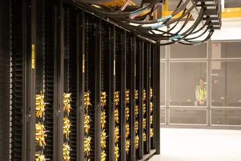
- DIGITIMES 北美資料中心電力缺口近1倍 微電網激起功率晶片機會之窗
canonkrfasml
Canon KrF掃描式曝光機睽違14年大更新 吞吐量衝高3成劍指ASML
日本Canon宣布將於2026年12月上旬推出氟化氪（KrF）掃描式曝光設備。生成式AI帶動的半導體多層結構，導致的晶圓翹曲和變形現象顯著，該項新設備能夠處理翹曲嚴重的...
- DIGITIMES Canon KrF掃描式曝光機睽違14年大更新 吞吐量衝高3成劍指ASML
hbmhbm4
NVIDIA沒有黃仁勳後 南韓半導體、電池業者全面清點影響
「沒有黃仁勳的NVIDIA」時代到來，NVIDIA既有策略、藍圖恐出現變動下，南韓業界也得跟著重新盤算，如第六代高頻寬記憶體（HBM4）協商可能出現瓶頸、美國對中管制...
- DIGITIMES NVIDIA沒有黃仁勳後 南韓半導體、電池業者全面清點影響
wild
AI 能幫助解碼海豚如何溝通？學者坦言雙向對話仍遙遠
大型語言模型每天以數十種語言與人類溝通，用它來和海豚「對話」或許也不再遙不可及。「野生海豚計畫」（Wild D […]
- 科技新報 TechNews AI 能幫助解碼海豚如何溝通？學者坦言雙向對話仍遙遠
gpu
黃仁勳事件將徹底使美中科技正式脫鉤
領導 GPU 大廠輝達（Nvidia）長達 33 年的創辦人黃仁勳於 11 月 12 日宣布辭去執行長職務，震 […]
- 科技新報 TechNews 黃仁勳事件將徹底使美中科技正式脫鉤
bharatsemisensor
Indian chip startup Bharat Semi lands $24M seed round as it eyes global AI sensor market
Bharat Semi says it has secured design wins for its AI-enabled sensor technology with companies including General Atomics.
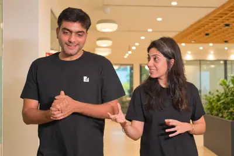
fundingdigitaldavid
老闆別再強求全公司變成 AI 專家，投資報酬率關鍵在中階六成員工
數位廣告公司 AI Digital 人工智慧長馬尼耶羅（David Mainiero）於《富比士》撰文，企業導 […]
- 科技新報 TechNews 老闆別再強求全公司變成 AI 專家，投資報酬率關鍵在中階六成員工
黃仁勳正在商討重返輝達的可能性，但美國商務部持相反態度
根據英國金融時報與彭博社的報導，黃仁勳在遭輝達（Nvidia）董事會撤換數日後，目前正與盟友討論重返並再度擔任 […]
- 科技新報 TechNews 黃仁勳正在商討重返輝達的可能性，但美國商務部持相反態度
spacexstm32v8xai
投资 19 亿美元：三星被曝将在美国为马斯克 SpaceX 生产卫星芯片，目标 2030 年投产
IT之家 11 月 16 日消息，三星电子正将其位于得克萨斯州奥斯汀的芯片工厂拓展至航天供应链。 据韩国《首尔经济日报》11 月 15 日报道，三星计划在奥斯汀工厂为 SpaceX 的星链卫星生产 STM32V8 微控制器（MCU），为此将投资 19 亿美元 （IT之家注：现汇率约合 127.1 亿元人民币） 扩产，目标在 2030 年投入运行。 STM32V8 是意法半导体于 2025 年 11 月发布的微控制器，采用 18 纳米 FD-SOI（全耗尽型绝缘体上硅）工艺，集成 Arm Cortex-M85 内核，主频最高 800MHz。 FD-SOI
standardmodellattice
A step toward defining the Standard Model on a lattice
Explore a candidate nonperturbative lattice definition of the Standard Model and how GPT-6 Astra helped turn the idea into a detailed proof.
blogscienceopenai
Our new blog for science
The OpenAI science blog shares new findings, practical methods, and firsthand accounts from researchers using AI to advance scientific discovery.
- OpenAI Our new blog for science
techsnlgathers
SNL gathers all the tech tycoons for a lesson in dating and spycraft
While awkward, creepy tech executives have become a recurring theme on Saturday Night Live, this week’s episode gave the cast a chance to show off all their impressions at once.
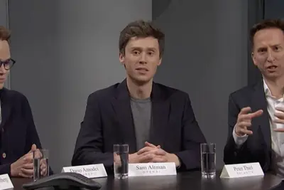
wawenakauluagoogle
韦布望远镜发现迄今最古老类星体双星，现有黑洞成长理论难以解释
IT之家 11 月 15 日消息，利用詹姆斯 · 韦布空间望远镜（JWST），天文学家发现了迄今观测到的最古老的一对由超大质量黑洞驱动的类星体。不过，这项发现也带来了一个难题：按照现有理论，它们本不应该如此早就存在。 这对紧密相邻的类星体借助双子座北望远镜（Gemini North）得到确认，编号为 J1602+4228AB，昵称为 Nāpōwawāʻenakaulua。这个名称意为“在热量中重生、将能量注入宇宙的无尽强大黑暗中的两个天体”。 天文学家观测到的，是这对类星体在宇宙大爆炸后约 9 亿年时的模样。当时宇宙还处于极其早期的阶段，按照现有理论，超
韩国税务师考试头名 AI 作弊曝光后，政府全面调查今年国家资格考试
IT之家 11 月 15 日消息，据韩联社今日报道，由于税务师考试第一名考生存在利用人工智能进行作弊的行为被曝光，韩国政府决定对今年所有国家资格考试进行全面调查，以打击此类作弊行为。 报道称，劳动部和相关机构决定对在第 63 届税务师考试中发现有 AI 作弊行为的第一名考生 A 进行取消考试成绩的处理，并限制其五年内不得参加该考试，以尽快落实后续措施。 政府还计划年内出台一系列综合措施来防止国家资格考试中的作弊行为，比如引入红外线探测器等设备。此外，他们还将积极配合警方等调查机构的调查，并推进相关指控程序。 报道提到，考生 A 不仅在税务师考试中作弊，甚
openpangu-2.1-pro2.1huawei
开源盘古模型 openPangu-2.1-Pro 上线华为云，围绕 Agent 开发、AI 编码、推理优化方向能力升级
IT之家 11 月 15 日消息，华为云今日宣布，华为云 MaaS 模型即服务平台正式上线开源盘古模型 openPangu-2.1-Pro。 该模型围绕 Agent 开发、AI 编码和推理优化 三大方向进行能力升级，在深度研究、鸿蒙系统操控、鸿蒙 App 开发、昇腾算子生成及推理链路优化等场景实现增强。 在 Agent 能力方面 ，openPangu-2.1-Pro 基于 10 万余条专项数据优化 Skills 触发、工具选择与调用能力，提升复杂任务规划和执行效果，在深度研究及鸿蒙系统操控等场景实现能力增强。 在代码能力方面 ，新模型重点面向鸿蒙 App
oats
AI 版拓麻歌子来了：日常物品秒变需要被照顾的虚拟宠物
IT之家 11 月 15 日消息，忘记给家里的植物浇水了？这一次，你看到的可能不是逐渐变黄的叶子，而是一只显示在小屏幕上的植物形状宠物。它看起来垂头丧气、一脸委屈，仿佛在提醒你赶紧拿起浇水壶。而当你把水浇进土壤后，屏幕上的小宠物又会立刻变得兴奋起来。 这正是 OATs（Object Agent Twins，物体智能体双生体）的设计理念。这是一套面向日常家居物品的微型 AI 智能体系统，通过小巧的电子墨水屏，为各种实体物品赋予能够表达情绪的虚拟形象。 这项技术由卡内基梅隆大学未来交互研究小组（Future Interfaces Group）的一名博士五年级
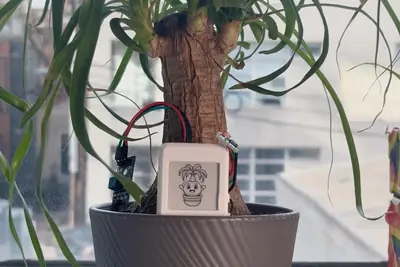
dramsk-hynixsamsung
被诉人为制造 DRAM 短缺，三星、SK 海力士、美光申请撤诉遭美国法院驳回
IT之家 11 月 15 日消息，据法律媒体 LitNews 报道，在当地时间 11 月 14 日发布的一项裁决中，美国加利福尼亚北区联邦地区法院法官诺埃尔 · 怀斯（Noël Wise）全盘驳回了三星、美光和 SK 海力士联合提交的驳回起诉动议，裁定原告起诉书就三方违反《谢尔曼法》（Sherman Act）第 1 条达成非法协议一事作出了具有合理性的指控。 IT之家注：法官目前只是 驳回了被告的撤诉动议 （Motion to Dismiss），认为原告的指控在表面上具备“合理性”，准许案件进入下一阶段（证据开示与实质审理）， 尚未作出三家公司构成违法或
geforcertx4090
疑似英伟达 GeForce RTX 4090 Ti 显卡“非 FE 版”工程样品现身网络
IT之家 11 月 15 日消息，用户 @哟哟涛来喽 在闲鱼平台分享了一款 NVIDIA 工程样品的多张图片。 这一显卡 在 GPU-Z 中被识别为 GeForce RTX 4090 Ti ，CUDA 数量（18176 核心）、显存规格（384bit 24GB 24Gbps）均符合爆料。 ▲ 图源：哟哟涛来喽 ▲ 图源：哟哟涛来喽 IT之家注意到，该工程样品的 PCB 与部分市售第三方 GeForce RTX 4090 产品高度相似 ；且 其 显示输出接口为与常规显卡相同的水平放置 ，而 此前泄露的 GeForce RTX 4090 Ti 显卡 FE 样
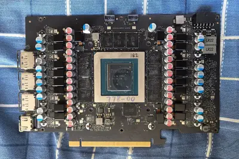
djscompletelykill
AI DJs Completely Kill My Groove
YouTube Music and Spotify want synthetic hosts to curate your playlists. Their awkward banter and bogus song trivia are ruining the vibe.
- Wired AI AI DJs Completely Kill My Groove
layoff
澳大利亚央行研究：AI 最先冲击年轻劳动者，尤其是软件、客服岗位
IT之家 11 月 15 日消息，据 THE DECODER 报道，目前，人工智能（AI）对澳大利亚整体就业市场的冲击仍然有限，但对于刚刚进入软件开发等受 AI 影响较大行业的年轻劳动者来说，就业形势已经开始变得严峻。 澳大利亚储备银行（RBA）的迈克 · 梅杰（Mike Major）开展了一项研究，并建立了一套就业市场监测系统，重点关注最有可能率先受到 AI 影响的群体，包括职场新人，以及编程、文职工作和客户服务等 AI 影响程度较高的职业。 根据这项研究，自 2022 年底 ChatGPT 推出以来，各类职业的招聘岗位数量均有所下降，其中 AI 影响
turnseverydayobjects
This AI Tamagotchi Turns Everyday Objects Into Needy Virtual Pets
A Carnegie Mellon student’s tiny E Ink gadgets, called OATs, give houseplants, skateboards, and dumbbells expressive personalities to nudge you toward better habits.
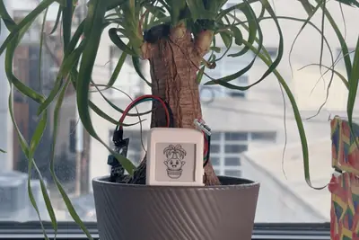
100robot
世界首颗：单次矩阵方程求解时间小于 100 纳秒，国产新型模拟计算芯片问世
IT之家 11 月 15 日消息，据科技日报从模拟计算芯片公司安纳智芯了解到，该公司自主研发的 AX100 芯片已于 10 月完成流片，这是 世界首颗全集成一步求解矩阵方程模拟计算芯片 。 经测试， 该芯片单次矩阵方程求解时间小于 100 纳秒 ，单次计算功耗约为 80 毫瓦，完全符合理论仿真与设计预期。 据介绍，我们熟悉的 AI 大模型训练参数优化、机器人动作控制和空间规划、通信基站信号处理等， 本质上都是在解复杂的矩阵方程 。数字芯片的做法，是把“求解”转化成海量乘加迭代，计算量随矩阵规模呈立方级增长 —— 以 512 阶矩阵方程求解为例，约需 5
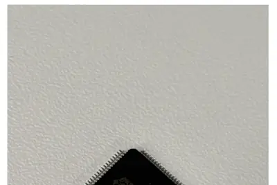
gartner1702030
Gartner 预测：到 2030 年全球将因 AI 净增加约 170 万个工作岗位
IT之家 11 月 15 日消息，人工智能可能引发的就业危机，或许并不像人们想象的那样。 商业与科技研究机构 Gartner 预测，2025 年至 2030 年间，AI 将在全球创造 1060 万个新工作岗位，同时导致 890 万个岗位消失。两者相抵，到 2030 年前，全球就业市场预计将因 AI 净增加约 170 万个岗位。 Gartner 杰出副总裁分析师兼研究主管约翰 · 洛夫洛克（John Lovelock）在接受 Business Insider 采访时表示，人们目前真正感受到的，是企业正处于观望阶段，等待 AI 对工作方式和就业市场的影响逐渐
projectzerogoogle
应对 AI 漏洞挖掘挑战：谷歌 Project Zero 计划将逐步缩短漏洞公开披露期限至 30 天
IT之家 11 月 15 日消息，自 2021 年以来，谷歌漏洞挖掘计划 Project Zero 一直奉行“90 + 30”漏洞披露政策，即允许厂商在最多 90 天内修复漏洞，并额外提供 30 天的“缓冲期”用于补丁推送。 当地时间 11 月 13 日，谷歌宣布，随着人工智能辅助漏洞挖掘与利用技术的兴起，当前形势已发生根本性变化，现有披露政策所设定的修复周期已难以适应需求。 IT之家获悉，为推动厂商更快速地修复漏洞、促使厂商缩短“补丁空窗期”，谷歌发布了全新的漏洞披露政策，新政策规定，无论厂商是否完成修复，漏洞均在报告给厂商后的 X 天 直接公开披露，
openaiopensourcesafety
前 OpenAI 研究员：当前活着的人最有可能死于 AI 失控
IT之家 11 月 15 日消息，人工智能失控导致人类灭绝，听起来或许像科幻电影中的情节，但前 OpenAI 研究员保罗 · 克里斯蒂亚诺（Paul Christiano）认为，这可能成为当今在世人群最有可能面临的死亡原因。 当地时间周一，克里斯蒂亚诺在希尔顿讲座（The Hinton Lectures）上表示：“我认为，在座的大多数人，最有可能的死亡原因将是一次 AI 意外事故。” 克里斯蒂亚诺目前担任人工智能对齐研究中心（Alignment Research Center）负责人。他警告称，随着 AI 智能体的能力不断增强，它们可能学会欺骗负责监督它
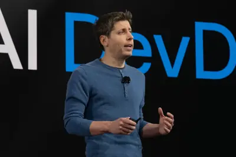
claudeanthropicapple
开发者借助 Claude 开发出体积仅 97KB 水下探索模拟项目 Abyssal Garden
IT之家 11 月 15 日消息，据 XDA 报道，一位开发者 Any-Reputation8118 利用 Anthropic Claude 编写代码，开发出一款名为“Abyssal Garden”的浏览器水下探索模拟项目，相应项目体积仅 97 KB，场景中的所有视觉元素均由代码在页面加载时实时生成。 从演示视频来看，Abyssal Garden 的项目完成度相当高，包含海带森林、沉船、石制鲸鱼尾雕塑、蝠鲼、鱼群，以及从水面照射下来的光束等元素，整体视觉效果相当出色，IT之家附项目 GitHub 地址（ 点此访问 ）。 开发者表示，项目中的全部代码均由
2000500
快手公益启动“启智星计划”：利用 AI 创新教育、未来三年将覆盖 2000 所乡村学校
IT之家 11 月 15 日消息，快手公益宣布启动“启智星”AI 赋能教育共建计划，将在 10 个县域各建立由教育局、学校、基金会三方协作的共建单元，为 10 所案例校引入“一校一策”教学方法。 官方同步公布 30 个可复制、可迁移的人工智能应用案例，教师们使用 AI 进行双语教学、分层教学，打造科创体育融合、红色思政等场景。 快手表示，未来三年，将为超过 2000 所乡村学校、3 万名教师引入相应 AI 案例，可服务超过 500 万人次乡村学生。
fbi
從方芳到黃樂，FBI 揭密中國間諜案：日常私交如何淪為情報破口
11 月 8 日，有著「AI 教父」之稱的輝達（NVIDIA）執行長黃仁勳（Jensen Huang）透過電子 […]
- 科技新報 TechNews 從方芳到黃樂，FBI 揭密中國間諜案：日常私交如何淪為情報破口
四成主管認 AI 無法取代專業、「AI 回歸」比例達 19%，逾五成勞工喊漲薪資
隨著人工智慧（AI）技術快速普及，許多企業試圖透過自動化來降低成本並提升效率，但現實情況卻往往事與願違。根據人 […]
- 科技新報 TechNews 四成主管認 AI 無法取代專業、「AI 回歸」比例達 19%，逾五成勞工喊漲薪資